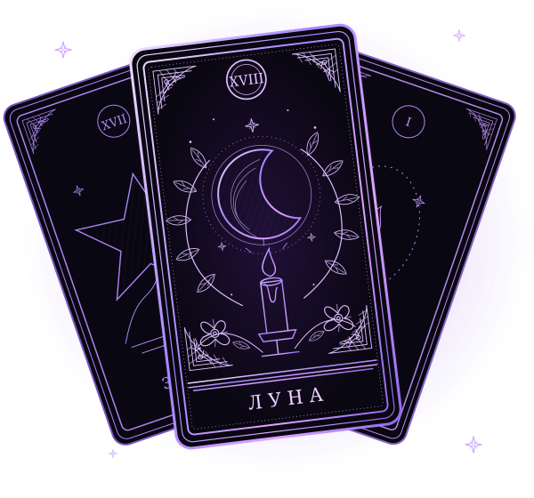

Твоя история.
На твоей коже.
Символ, который отзывается. История, которую
хочется сохранить. Начнём с твоей идеи.

ЛУНА · СИМВОЛЫ · ЛИЧНЫЕ ИСТОРИИ ✧Есть место
для твоей истории.
Можно прийти со своей идеей.
Или дождаться новых эскизов мастера.
Эскизы появятся здесь
Пока оставим это пространство чистым.
Твою идею уже можно обсудить лично.
От первой мысли
до встречи.
Пять коротких ответов.
Остальное обсудим вместе.
- 01
Расскажи идею
Место, примерный размер и то, что хочется изобразить. Референсы по желанию.
МОЖНО БЕЗ ГОТОВОГО ЭСКИЗА - 02
Обсуди детали
Мастер ответит, уточнит задумку, стоимость и удобные даты.
ОТВЕТ МАСТЕРА В TELEGRAM - 03
Получай подтверждение
Когда всё согласовано, бот пришлёт дату и время, а перед встречей напомнит о сеансе.
ДАТА ПОСЛЕ СОГЛАСОВАНИЯ
Можно
спросить.
Хорошая тату начинается
с понятного разговора.
А если я пока не знаю, что хочу?
Опиши настроение, историю или символы, которые тебе близки. В анкете можно написать «помоги определиться» с размером или местом.
Как узнать стоимость?
Она зависит от размера, детализации, места и времени работы. Мастер назовёт стоимость после обсуждения идеи, до подтверждения сеанса.
Нужна ли предоплата?
Условия бронирования, оплаты и переноса мастер согласует лично. В боте нет автоматической оплаты.
Могу ли я перенести или отменить запись?
Для переноса напиши мастеру. Для отмены открой «Моя заявка» в боте. Если дата уже назначена, предупреди как можно раньше.
Что нужно указать в анкете?
Имя, идею, место, размер и удобные дни. Бюджет и до трёх референсов по желанию. Телефон, паспорт и медицинские сведения не нужны. Запись через бота доступна с 18 лет.